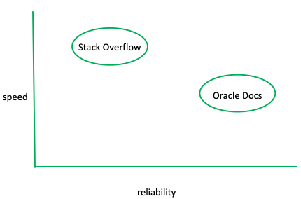
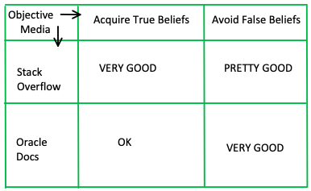

, or not to ,
, or not to ,You’re a computer science student applying to your dream co-op. You are holed up on the 4th floor of Snell, rapidly typing, nervously trying to finish your interview coding challenge before the 2 hour time limit is up.
Shoot, you can’t remember the syntax for a 2d array.
You swiftly bring up a new tab and throw “java 2d array” into Google search. The first result is a link to Stack Overflow and the second is a link to Oracle’s official Java documentation. You know that you should click the ladder, but you’re on a time crunch and don’t even entertain the idea of scanning through the terrifyingly dense, hard to read documentation right now.
On the fecundity front, the two are pretty much equal. They're both free and one Google-search away. The documentation is inherently reliable since it's literally the written instructions for how to use the language… you can't be misled by anything in the most recent version of the Docs. On the other hand, in the nature of any crowdsourcing platform, you never know the reliability of an answer on SO; posts can be decades old and hold answers with poor coding practices. However, the Documentation's power is somewhat limited compared to SO's. In the Docs you will only find definitions and syntax, you can't ask it to help you actually write any code, ie. most efficient bubble sort algorithm, how to sort an array of integers, etc.
In this particular situation, though, with speed as the primary objective, SO wins because of it's user readability (or more accurately, scannability). You can find what you're looking for very quickly. Then again, who knows if it will be right, who knows if you'll apply it properly...

Alas, this was the situation I was in on Wednesday, and I followed the first link and Stack Overflow gave me the exact tid bit of responsive knowledge I needed to get my program to compile. And, as a 21st century human who can’t help but prefer to “scan rather than read”, I was elated to have read 1 sentence total.
wow, you totally just exposed yourself about using external sites for help during a job interview! isn’t that cheating? But, the instructions of the coding challenge explicitly allowed for the use of the the internet, including SO:
Indeed, exercising our ability to “Google-Know” is entirely normal and expected in the CS world.
- in courses you may be indicted for asking a syntactical, easily google-able question because professors expect us to ‘consult and use our resources’ first.
- in my first co-op this fall on a software dev team, I was shocked to find that when triaging bugs, a colleague would plop the error message into Google and click the first link of results, which was often SO.
The CS community's general endorsement of crowdsourcing platforms and internet use in general suggest a few things...
Have we effectively taken William James' side in his disagreement with Clifford? As Thagard says, "the Web provides less scrutiny and more access, so the problem of distinguishing knowledge and nonsense is even more acute"... but it appears that we give more weight to the acqusition of true beliefs than to avoiding error? In the modern digital world, regardless of the field, the evaluation of a student or applicant doesn't seem to be necessarily all about their certain knowledge, but of how quickly we can use our resources to get responsive knowledge and turn it into reflective knowledge. Is this the experience you all have had? Do you agree that there is valuable non-knowledge?

To return to the original context, it seems odd that, during an interview, where the sole purpose is evaluating your knowledge, you are allowed to consult any source on the world wide web. Does this mean employers are agreeing with Papineau's view of knowledge as an old-fashioned concept? Aren't they effectively saying “who cares that intuitively [the candidate] can't deliver knowledge" as long as they know how to quickly and effectively acquire it?
Stack Overflow is a crowd-sourcing site where developers share programming solutions in a Q&A format. It is a go-to hub for reactive CS knowledge, seeing 9+ billion page views from 100+ million users in 2019.
SO’s self proclaimed mission is to “help everyone who codes learn and share their knowledge,” but its recieved its fair share of criticism. BBC dubbed its users "Lazy developers who copy solutions" and this Cornell study voices the security dangers of crowd-sourced code snippets.